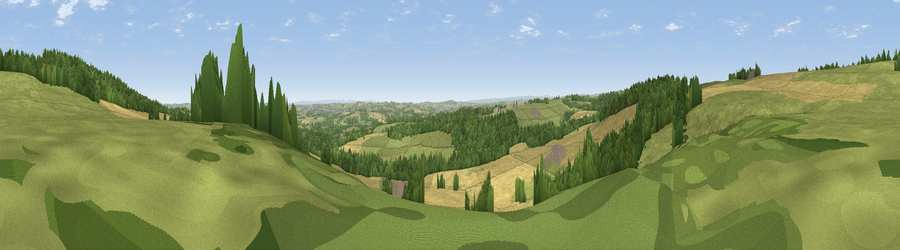

Viewpoint near Brancepeth
#16920 in England · top 36% of its area beats it · near BrancepethThe view, rendered

A 360° render of this exact spot computed from the terrain model, tree cover and land cover — summer colours, afternoon light, calibrated against photographs of famous viewpoints. Real trees, hedges and buildings will differ in detail.
The panorama
Grey silhouette: terrain skyline in each direction (720 bearings, Earth curvature and refraction included). Dashed green: skyline with trees (+15 m) and buildings (+8 m) as obstacles. Blue strip: how far the ground is visible on each bearing.
Where the view opens
Wedge length = distance to the farthest visible ground on that bearing (vegetation-aware). Rings at 10, 25 and 50 km.
What fills the view
39% grassland · 35% cropland · 25% woodland · 2% built-up
Angular shares of the visible panorama (visual magnitude), not map area. Landscape diversity 0.50 (0–1 Shannon).
Key numbers
More beautiful places nearby
The staircase of upgrades: each row has a higher view potential than everything closer. Driving times are estimates from straight-line distance, calibrated against real road routing — check an actual route before setting out.
| Place | Direction | Drive | Score |
|---|---|---|---|
| Brandon Hill | N · 1 km | ~3 min | 69.7 |
| Viewpoint near Billy Row | SW · 4 km | ~10 min | 70.3 |
| Viewpoint near Edmondsley | N · 9 km | ~18 min | 72.6 |
| Viewpoint near Quarrington Hill | E · 12 km | ~23 min | 73.1 |
| Pontop Pike | NNW · 15 km | ~27 min | 77.8 |
| Viewpoint near Newton Under Roseberry | SE · 41 km | ~60 min | 78.3 |
| Viewpoint near Lazenby | ESE · 42 km | ~61 min | 86.4 |
| Warsett Hill | ESE · 52 km | ~73 min | 86.8 |
54.74666, -1.68112 · source: screening · position refined by local search. Computed location — check access rights before visiting.